Ahol a gazdi-lét elkezdődik.
A Pacsi segít a leendő gazdiknak megtalálni a hozzájuk illő kutyát – egy kutyás márkának pedig ott lenni ennél a döntésnél.
Minden gazdi-történet egy döntéssel kezdődik.
Mielőtt megérkezik az első zsák táp, az első póráz vagy az első oltás, a leendő gazdi eldönti, milyen kutyát választ. Ez a döntés 10–15 évre meghatározza, mire és hol költ.
Hetekig tartó keresgélés: fórumok, listák, ismerősök tanácsai.
Első táp, fekhely, póráz, első állatorvosi vizit.
Oltások, kutyaiskola, ápolás, biztosítás.
Napi etetés, egészség, kényelem, közös kalandok.
Aki a döntésnél segít, arra a gazdi emlékszik.
A legtöbben nem a hozzájuk illő kutyát választják.
A választási szempontok említési aránya. Vetter, Vizi, Özsvári: Magyar Állatorvosok Lapja, 2022 (reprezentatív felmérés, n = 1001, 2021).
A magyar gazdik közül ennyien vették figyelembe a saját életkörülményeiket, amikor kutyát választottak.
egyáltalán nem tájékozódik a kutya érkezése előtt, 40% pedig egy hétnél rövidebb ideig.
Holland, Animals, 2019 (Dogs Trust, Egyesült Királyság)
került gyepmesteri telepre Magyarországon 2023-ban.
NÉBIH-adat, Pénzcentrum, 2024
Magyarország Európa egyik legkutyásabb országa.
kutya él Magyarországon
FEDIAF Facts & Figures 2025 (2023-as adat)
a háztartások fele tart kutyát – a legmagasabb arány 41 európai ország közül
FEDIAF 2025; hasonló: Medián-felmérés 2021 (50,4%)
kutyaeledelre 2025-ben – a teljes kisállateledel-piac 143 Mrd Ft
NIQ kiskereskedelmi index, Trade magazin, 2026
Más felmérés alacsonyabb arányt mér: a TÁRKI 2022-es adatai szerint a felnőttek 30%-a él kutyával (eltérő módszertan: személyek, nem háztartások).
Pacsi: a kutyafajta-választó, ami élmény.
124 népszerű fajta egy élő, lebegő felhőben. Minden szűrőre fizikailag reagál: a nem illő fajták kirepülnek, a legjobb találatok előrejönnek.
Látványos
A döntés nem táblázat, hanem élmény – ezért megosztják.
Személyre szabott
Szűrők, Párkereső kvíz, illeszkedés %-ban, összehasonlítás.
Felelős
Egészségi jelölések, „kinek nem ajánlott”, örökbefogadás.
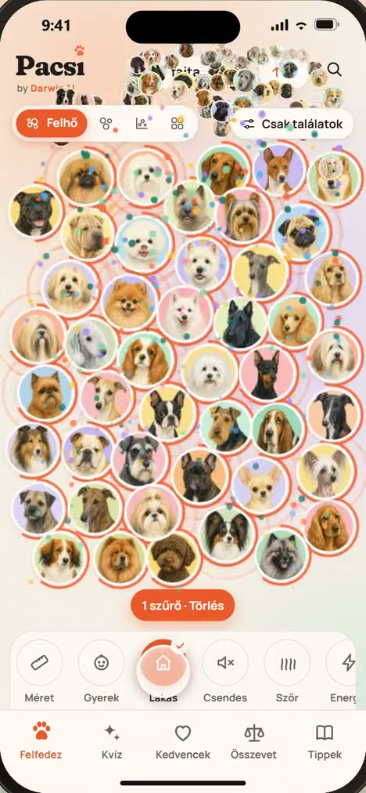
Minden, ami a jó döntéshez kell
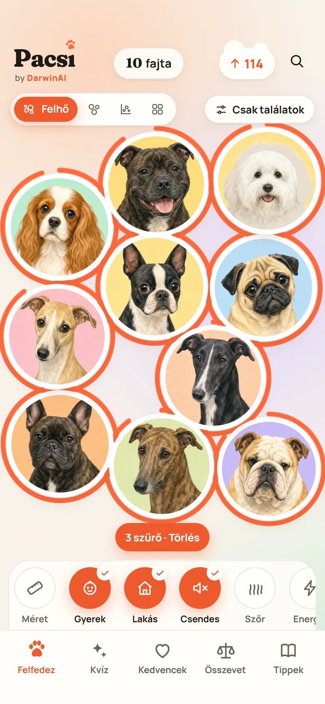
Élő felhő és szűrők
Lakás, gyerek, csend, szőrhullás, méret, energia – élő reakcióval.
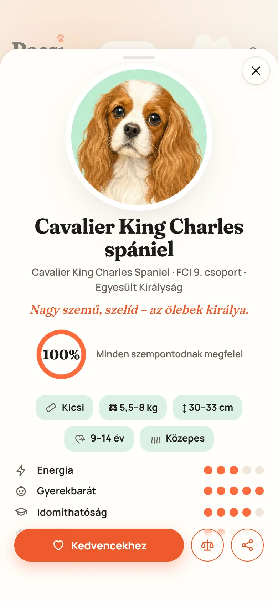
Fajtakártya
Illeszkedés, 9 jellemző, egészség, költség, kinek ajánlott – és kinek nem.
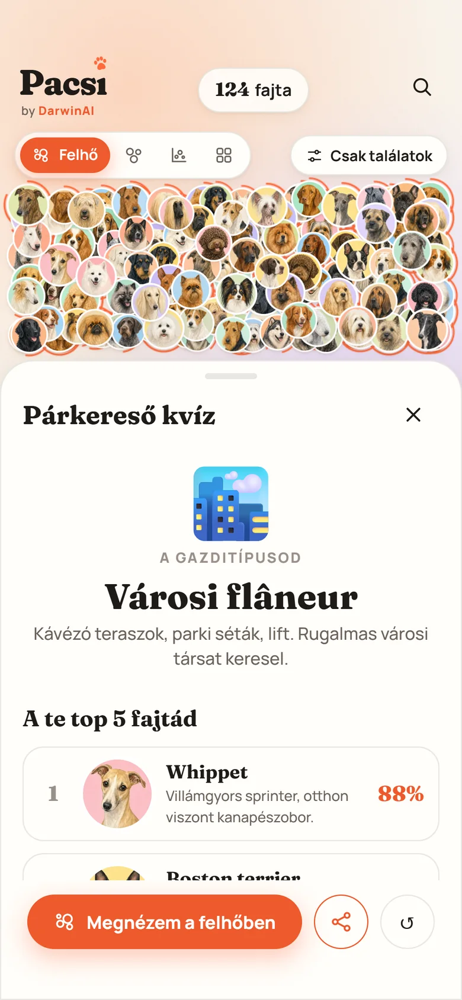
Párkereső kvíz
10 kérdés, 6 gazditípus, top 5 fajta – megosztható eredmény.
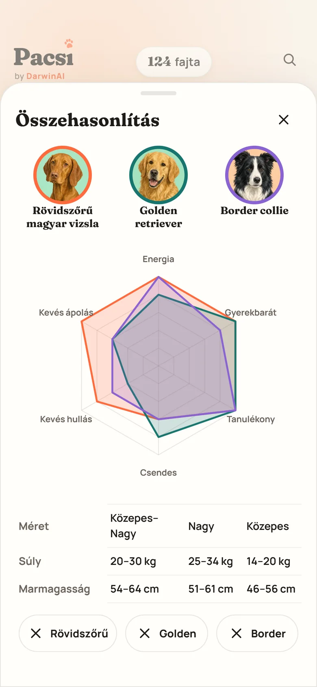
Összehasonlítás, térkép
Három fajta egymás mellett; méret × energia térkép.
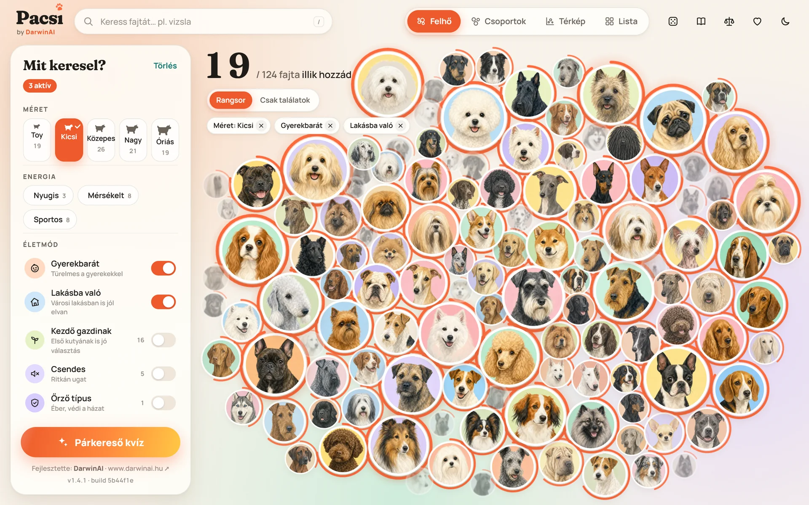
Kész, élő termék – nem ígéret.
kutyafajta teljes tartalommal és saját portréval
jellemző fajtánként, 1–5-ös skálán
kérdéses Párkereső kvíz, 6 gazditípussal
nézet: felhő, csoportok, térkép, lista
regisztráció és süti – nincs adatgyűjtés
telepíthető app, offline is működik
Kiknek segít – és kiket ér el a partner?
Anna, 31
Budapesti panellakás, home office. Az első kutyája lesz.
„Melyik kutya bírja a lakást, és nem ugat egész nap?”
Kölyökeledel, lakásba való felszerelés
Gábor és Eszter, 38/36
Kertes ház Érden, két gyerek (5 és 9 évesek).
„Melyik türelmes a gyerekekkel, és mennyi munka vele?”
Családi csomagok, egészség, biztonság
Réka, 26
Fut, túrázik, canicross-ozna.
„Kivel tudnék együtt sportolni?”
Aktív táplálás, sportfelszerelés
Péter, 64
Kisebb ház, allergiás feleség.
„Kevés szőrhullás, nyugodt, közepes méret?”
Egészség, ápolás, kényelem
Dóra, 22
Még nem vesz kutyát, de már álmodozik.
„Melyik kutya illik hozzám?”
A jövő vásárlója – aki megosztja
A Pacsi termékspecifikációjának perszónái – tipikus felhasználói helyzetek.
Egy kutyás márka számára a Pacsi a legkorábbi találkozási pont.
A döntés pillanatában
Még a kölyök érkezése előtt találkozik a leendő gazdival – amikor a legnyitottabb.
Segítőként, nem hirdetőként
Kontextusba illő, hasznos tartalom a fajtakártyán és a kvízben – nem reklámzaj.
Felelős márkaérték
Felelős kutyatartás, egészség, örökbefogadás: hiteles, közös történet.
Mérhető
Megjelenés, kvízkitöltés, kattintás, megosztás – sütimentes, anonim méréssel.
Gyors fejlesztés
Saját fejlesztésű magyar termék: közös funkciók hetek alatt.
Így jelenne meg az Ön márkája a Pacsiban
Szakértői tipp a fajtakártyán
Méret és életmód szerint, a fajta leírása mellett.
Szponzorált Párkereső kvíz
Az eredményoldalon, a legmegosztottabb képernyőn.
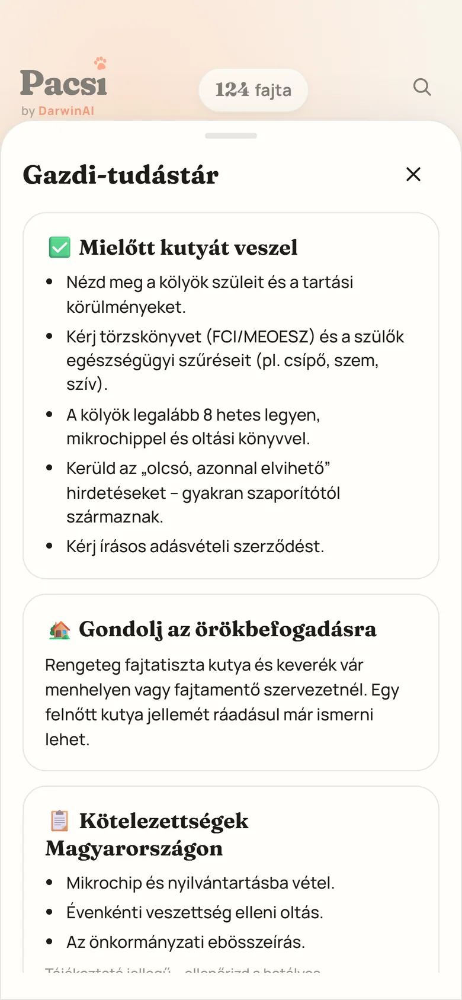
Gazdi-tudástár
Szponzorált útmutatók: etetés, egészség, első év.
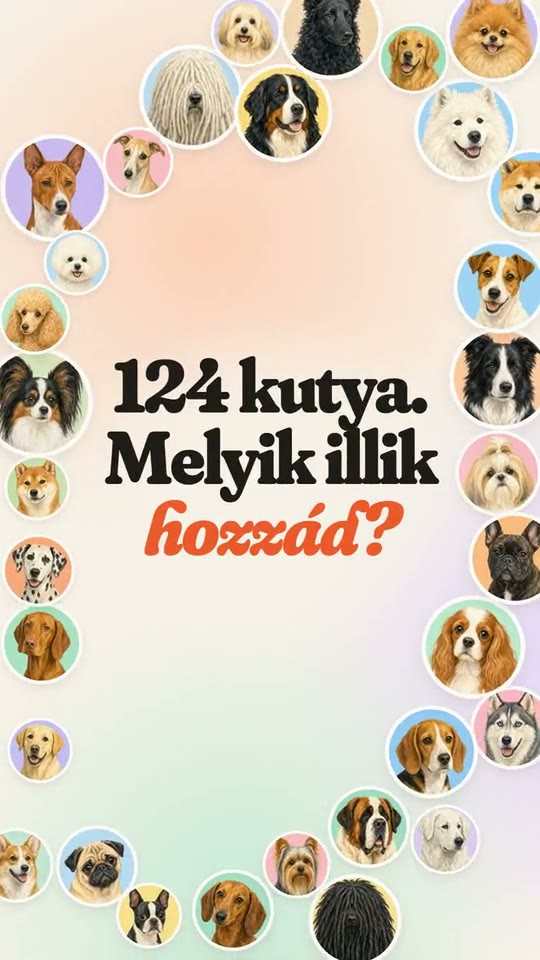
Közös videósorozat
TikTok, Reels és Facebook – a partner neve a zárókockán.
Látványtervek – a végleges megjelenést a partnerrel közösen alakítjuk ki.
Három út a közös munkához
Alapító partner
12 hónap- Támogatói megjelenés az appban (névjegy, kezdőképernyő)
- Szakértői tippek a fajtakártyákon, méret és életmód szerint
- Szponzorált Párkereső kvíz, kezdőcsomag-ajánlattal
- Havi 4 közös közösségimédia-videó
- Szakmai lektorálás: „Szakmailag lektorálta” jelvény
- Negyedéves riport, közös PR-indulás
Tartalompartner
6 hónap- Szponzorált szekció a Gazdi-tudástárban
- Egy kontextuális blokk a fajtakártyákon
- Havi 2 közös poszt
- Havi riport
Kampánypartner
1–3 hónap- Kampányidőszakos kvíz-szponzoráció
- Közös videósorozat (4–6 videó)
- Kampányzáró riport
Az árazás a csomagtól, az időtartamtól és a csatornáktól függ – egyedi ajánlatot készítünk.
Mérhető eredmények – adatvédelmi aggály nélkül.
Sütimentes, anonim mérés (például Plausible): nincs cookie-banner, nincs személyes adat. A mérést a partnerség indulásával kapcsoljuk be.
- Partnerblokk-megjelenések a fajtakártyákon és a kvízeredményben
- Kvízkitöltések és megosztások – a legmegosztottabb képernyő
- Átkattintások a partner oldalára, UTM-címkével
- Közösségi elérés: megtekintés, interakció, követők
- Havi riport és negyedéves közös áttekintés
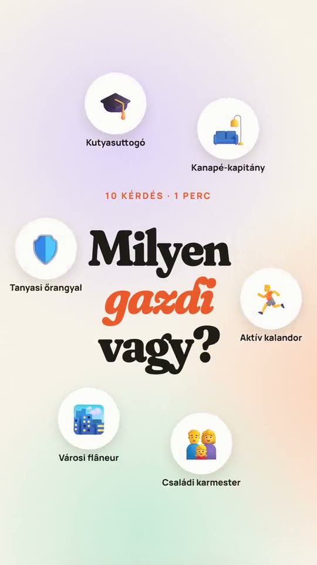
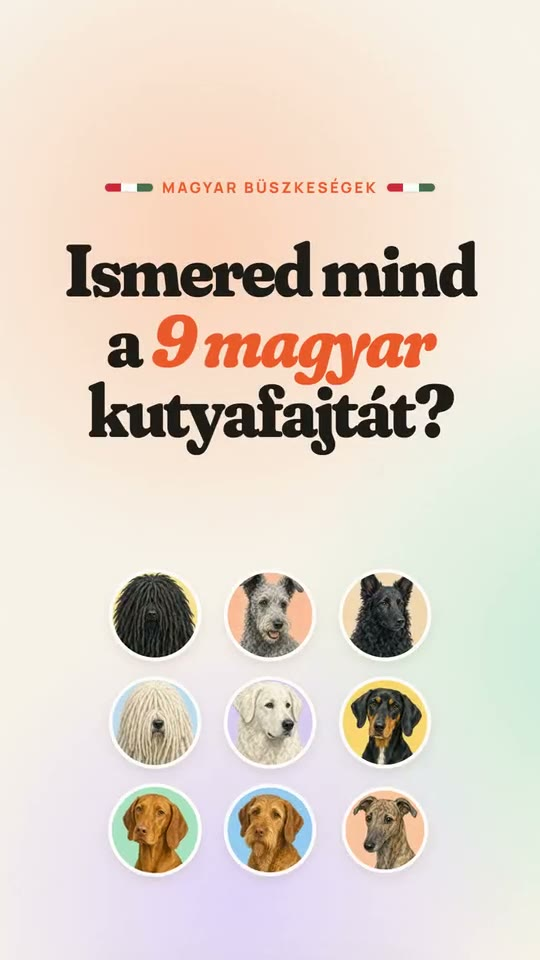
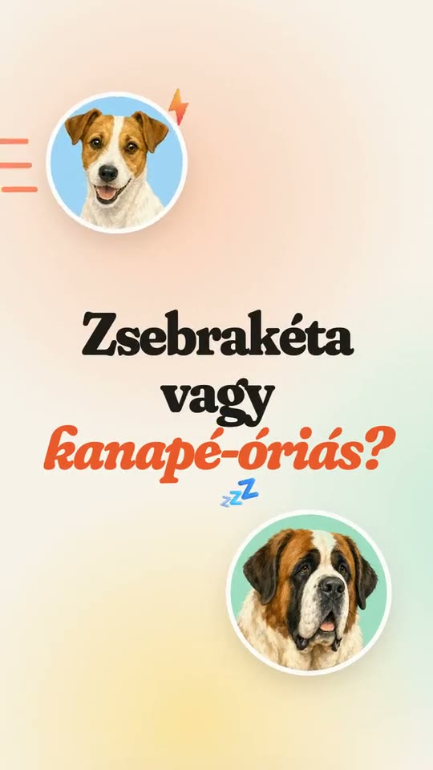
Folyamatosan szem előtt
Kétnaponta új TikTok/Reels videó, heti 3–4 poszt, heti LinkedIn-tartalom. A partner neve megjelenhet a sorozatokban – például „A hét fajtája”.
Facebook-felhasználó
TikTok-felhasználó (18+)
Instagram-felhasználó
Magyarország, DataReportal: Digital 2026 Hungary. A videók az elkészült induló kampány részei.
Biztonságos, felelős márkakörnyezet
- Nincs regisztráció, nincs személyes adat – GDPR-barát működés.
- Nincs felhasználói tartalom – nincs moderációs kockázat.
- Felelős fajtakommunikáció – nincs „veszélyes fajta” címke, egészségi jelölések vannak.
- Örökbefogadás egyenrangú útként – tenyésztői reklám nélkül.
- Szakmai lektorálás a partner szakértőivel, „Szakmailag lektorálta” jelvénnyel.
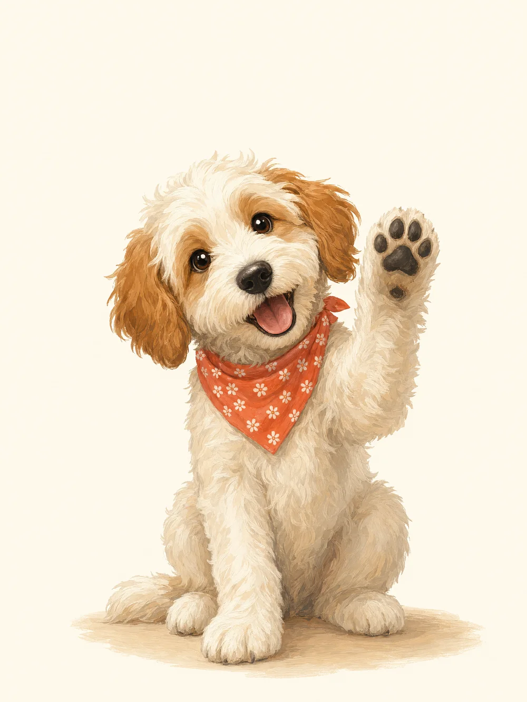
Közösen építhető a folytatás
Él a v1.4
- 124 fajta, szűrők, kvíz, összehasonlítás
- Telepíthető PWA, offline működés
- Induló közösségimédia-kampány
Partnerintegráció
- Partnerblokkok, szponzorált kvíz
- Sütimentes mérés, riportok
- Közös videósorozat
Növekedés
- Keresőbarát fajtaoldalak (SEO)
- Költségbecslő – partnerrel közösen
- Angol és német nyelv
Közösség
- Menhelyi és fajtaklub-kapcsolatok
- Fotó mód a portrék mellé
- Új közös funkciók a partnerrel
Javasolt ütemezés – a partner igényei szerint alakítható.
Legyen a Pacsi első alapító partnere!
30 perces bemutató
Online, élő demóval.
3 hónapos pilot
Kampánypartnerként, mérhető célokkal.
Alapító partnerség
Kategóriánként egyetlen márkával.
Kapcsolat: DarwinAI · www.darwinai.hu
Próbálja ki most
sabolo100.github.io/DogsClaudeIngyenes, regisztráció nélkül · telefonon appként is telepíthető
A számok forrásai
- FEDIAF: Facts & Figures 2025 (2023-as adatok) – kutyák száma, a kutyás háztartások aránya. europeanpetfood.org
- Vetter Sz., Vizi Zs., Özsvári L.: Magyar Állatorvosok Lapja, 2022 – reprezentatív felmérés (Medián, n = 1001, 2021): kutyás háztartások, választási szempontok. univet.hu
- Kubinyi E., Varga O.: TÁRKI-felmérés, 2023 (n = 1023, 2022) – a felnőttek 30%-a él kutyával. real.mtak.hu
- NIQ kiskereskedelmi index, Trade magazin, 2026. május 27. – kisállateledel-piac 2025. trademagazin.hu
- Holland, K. E.: Acquiring a Pet Dog, Animals, 2019 (Dogs Trust) – tájékozódás a kutya beszerzése előtt. pmc.ncbi.nlm.nih.gov
- NÉBIH-adat, Pénzcentrum, 2024. szeptember 8. – gyepmesteri telepekre került kutyák 2023-ban. penzcentrum.hu
- DataReportal: Digital 2026 Hungary – közösségimédia-felhasználók. datareportal.com
Pacsi partneri ajánlat · v1.1.2 · build 60e8966 · Pacsi by DarwinAI · www.darwinai.hu